Predstavitev moštev (Vrstni red po koledarju 2026)
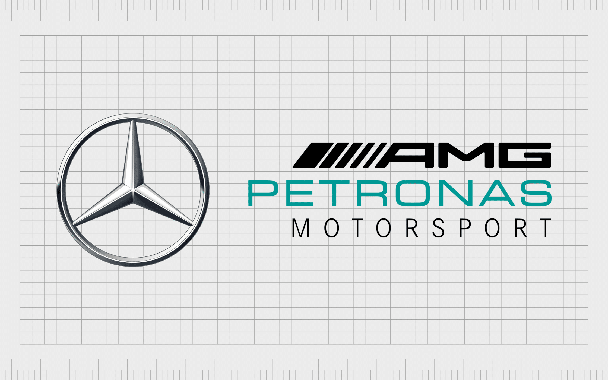
Mercedes-AMG Petronas
Točke: 244
Trenutna dirkaška zasedba:
- Kimi Antonelli (Italija)
- George Russell (Velika Britanija)
Zgodovina ekipe
Mercedes ima bogato zgodovino, ki sega v obdobje pred drugo svetovno vojno, v sodobni eri Formule 1 pa so podrli vse rekorde z osmimi zaporednimi konstruktorskimi naslovi med letoma 2014 in 2021. Znani kot "Srebrne puščice" slovijo po vrhunski nemški inženirski natančnosti.
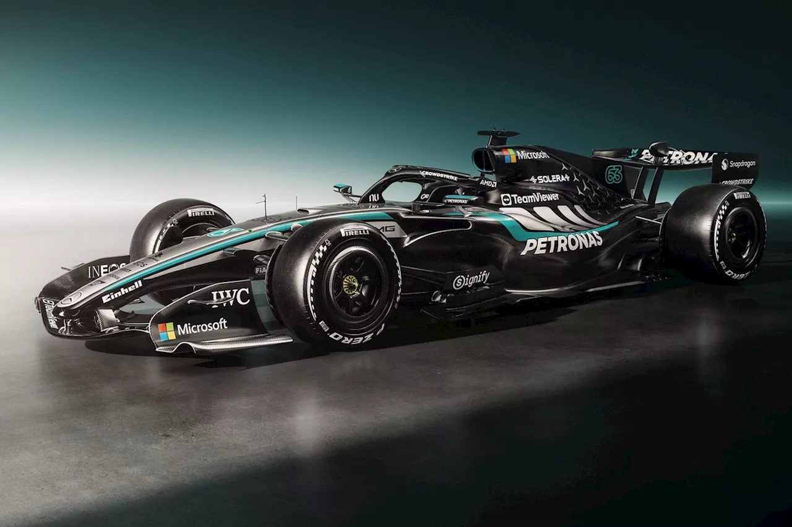
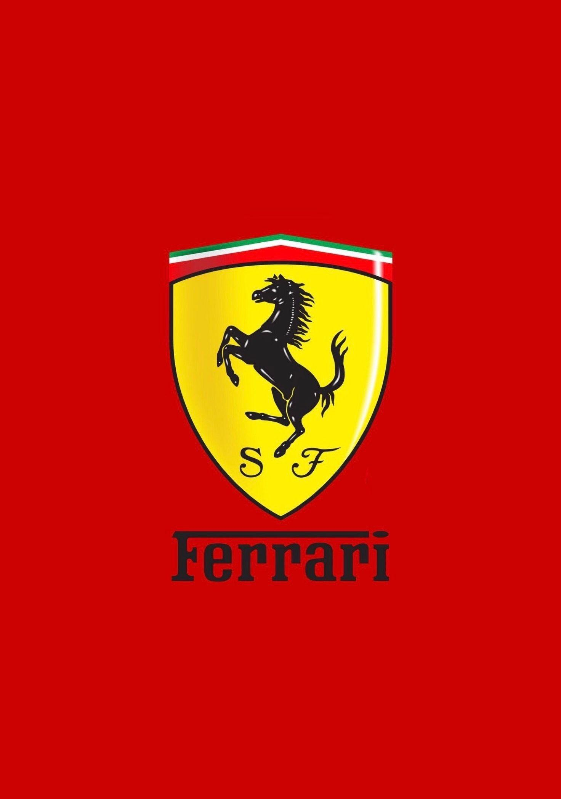
Scuderia Ferrari
Točke: 165
Trenutna dirkaška zasedba:
- Lewis Hamilton (Velika Britanija)
- Charles Leclerc (Monako)
Zgodovina ekipe
Scuderia Ferrari je najstarejša in najuspešnejša ekipa v zgodovini Formule 1, saj v prvenstvu sodeluje že od samega začetka leta 1950. Ustanovil jo je Enzo Ferrari, ekipa iz Maranella pa med navijači (Tifosi) uživa kultni status.
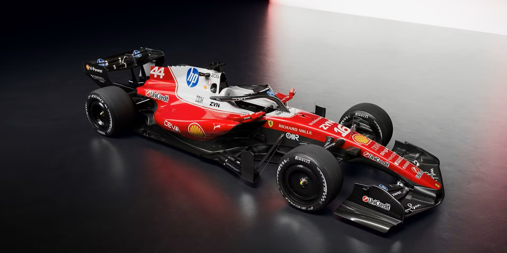
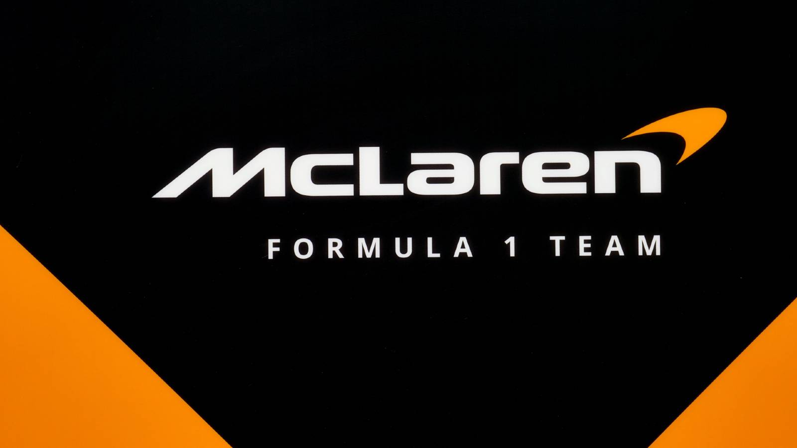
McLaren Formula 1 Team
Točke: 118
Trenutna dirkaška zasedba:
- Oscar Piastri (Avstralija)
- Lando Norris (Velika Britanija)
Zgodovina ekipe
Moštvo je leta 1963 ustanovil Bruce McLaren. Velja za drugo najstarejšo aktivno ekipo. Skozi zgodovino so z legendarnimi dirkači, kot sta Ayrton Senna in Alain Prost, osvojili številne naslove, prepoznavni pa so po svoji drzni papaja oranžni barvi.
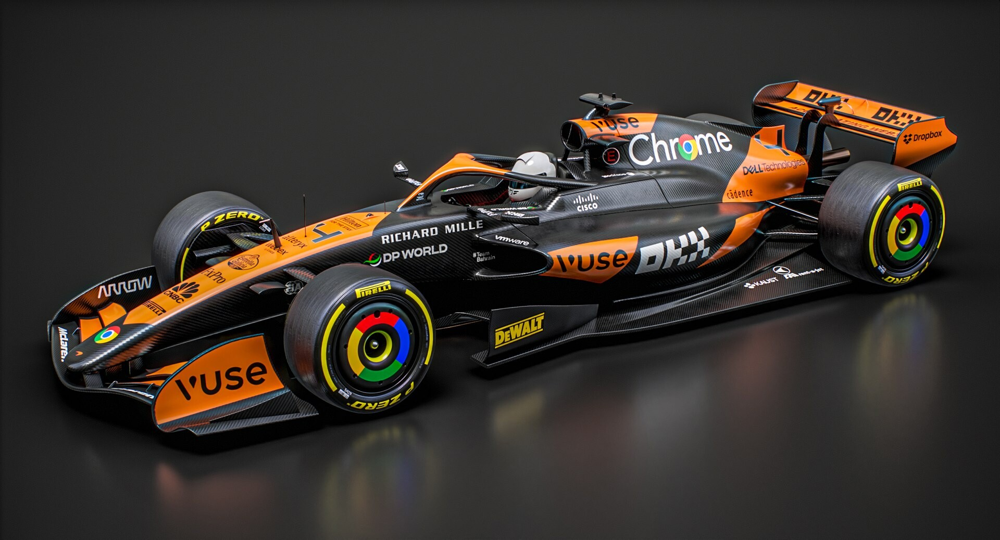
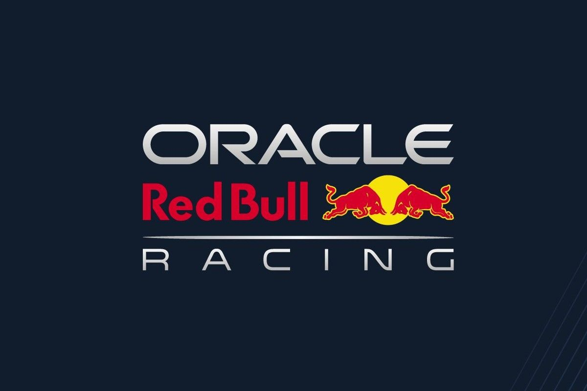
Oracle Red Bull Racing
Točke: 72
Trenutna dirkaška zasedba:
- Max Verstappen (Nizozemska)
- Isack Hadjar (Francija)
Zgodovina ekipe
Ekipa je nastala s prevzemom Jaguarja sredi 2000-ih pod okriljem podjetja pijač Red Bull. Z genialnim oblikovalcem Adrianom Neweyjem so zgradili šampionska obdobja, najprej s Sebastianom Vettelom, nato pa s serijskimi naslovi Maxa Verstappna.
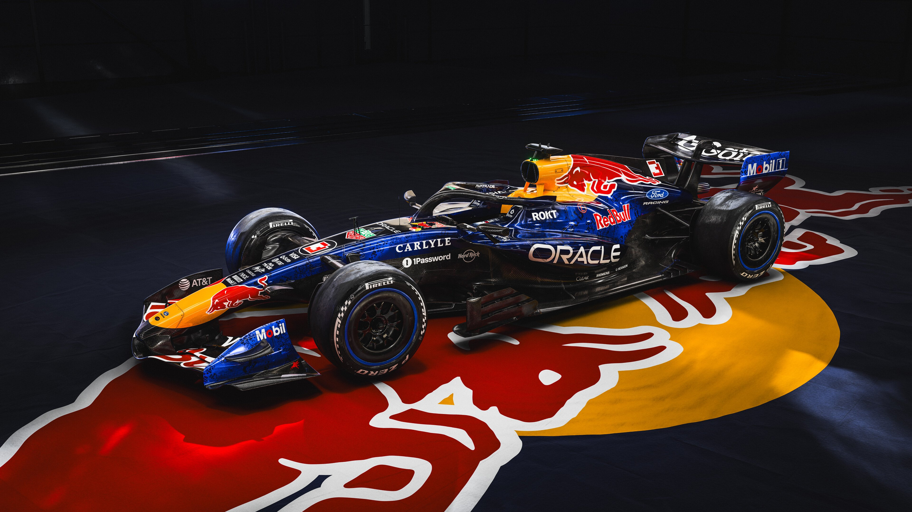
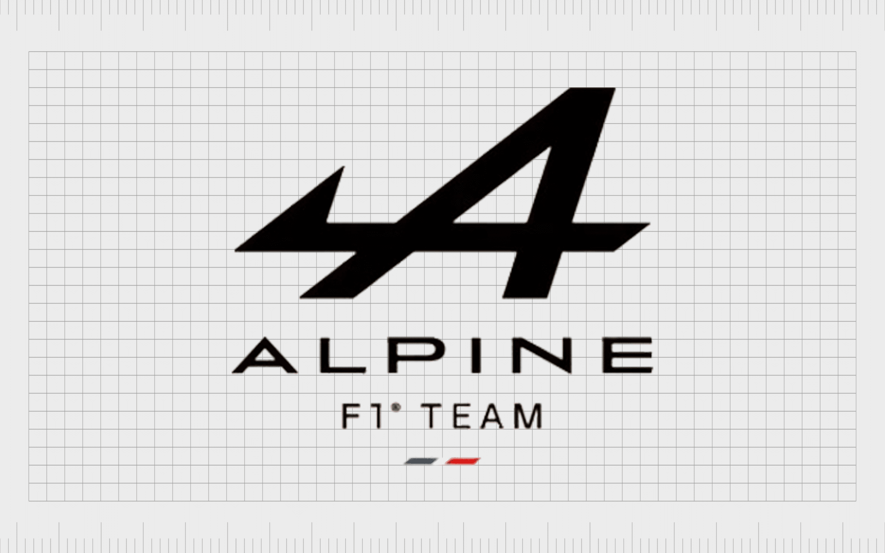
BWT Alpine F1 Team
Točke: 42
Trenutna dirkaška zasedba:
- Pierre Gasly (Francija)
- Franco Colapinto (Argentina)
Zgodovina ekipe
Moštvo s sedežem v Enstonu ima bogato tovarniško preteklost, saj je prej delovalo pod imeni Renault, Lotus in Benetton. Kot Alpine predstavlja francosko športno znamko, v sezoni 2026 pa stavijo na mešanico izkušenj in mladostnega elana Franca Colapinta.
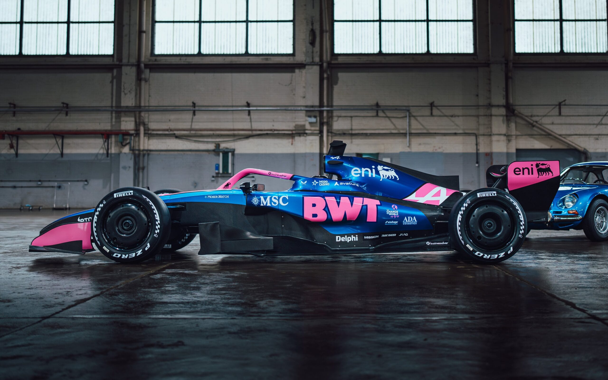
Visa Cash App Racing Bulls
Točke: 39
Trenutna dirkaška zasedba:
- Liam Lawson (Nova Zelandija)
- Arvid Lindblad (Velika Britanija)
Zgodovina ekipe
Nekdanji Toro Rosso in AlphaTauri iz italijanske Faenze deluje kot sestrski projekt Red Bulla za razvoj mladih talentov. V sezoni 2026 so popolnoma prenovili svojo zasedbo in priložnost ponudili izjemno obetavnima Lawsonu in Lindbladu.
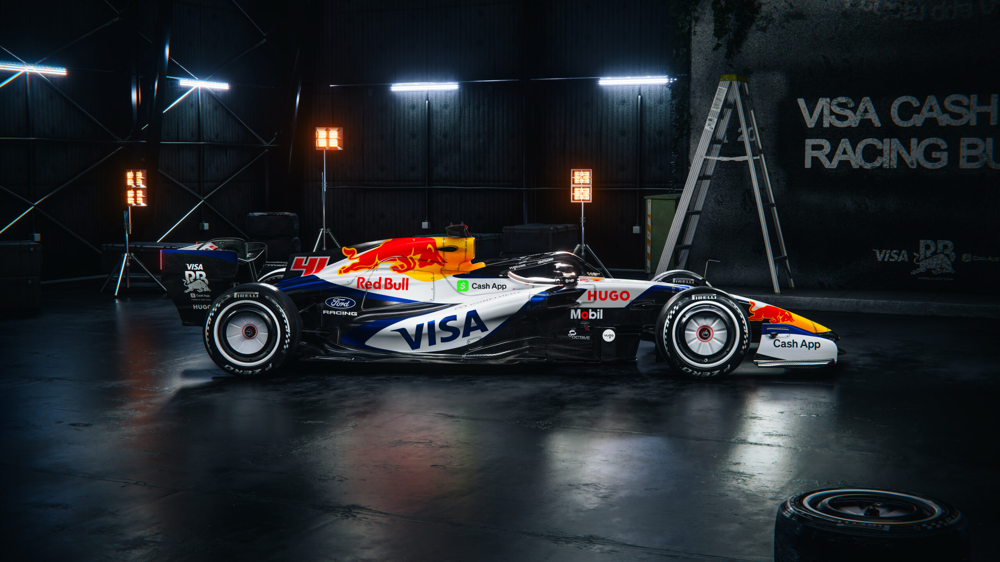
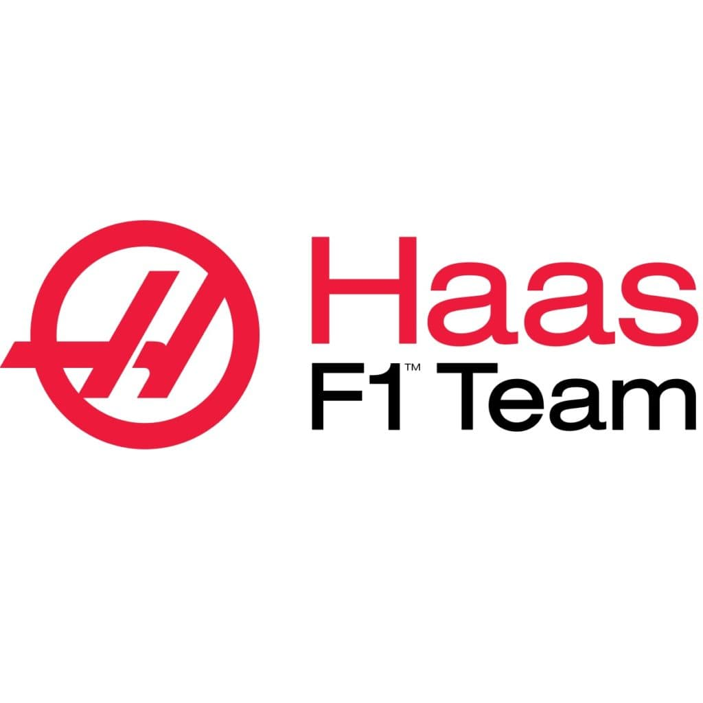
MoneyGram Haas F1 Team
Točke: 21
Trenutna dirkaška zasedba:
- Oliver Bearman (Velika Britanija)
- Esteban Ocon (Francija)
Zgodovina ekipe
Edina ameriška ekipa na štartni vrsti je v Formulo 1 vstopila leta 2016 pod vodstvom Gena Haasa. Znani so po tesnem tehničnem sodelovanju s Ferrarijem. Letos imajo v svojih vrstah hitrega mladca Bearmana in prekaljenega zmagovalca dirk Estebana Ocona.

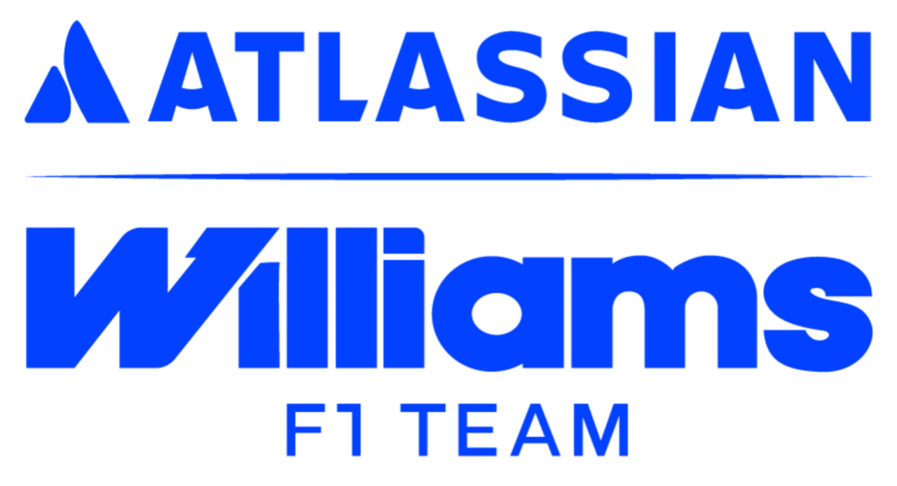
Williams Racing
Točke: 11
Trenutna dirkaška zasedba:
- Carlos Sainz (Španija)
- Alexander Albon (Tajska)
Zgodovina ekipe
Williams je eden izmed treh velikih zgodovinskih stebrov Formule 1, ki ga je ustanovil pokojni Sir Frank Williams. V 80. in 90. letih so kraljevali svetu športa. Z izjemno močno zasedbo Sainz-Albon se pod vodstvom Jamesa Vowlesa zanesljivo vračajo med dobitnike točk.

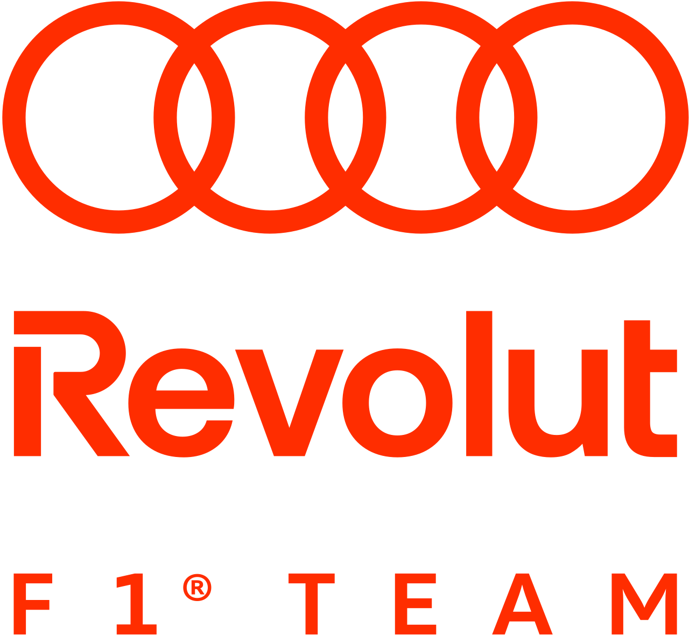
Audi F1 Team
Točke: 2
Trenutna dirkaška zasedba:
- Nico Hülkenberg (Nemčija)
- Gabriel Bortoleto (Brazilija)
Zgodovina ekipe
Nemški avtomobilski gigant Audi je z uradnim vstopom v sezoni 2026 prevzel operacijo nekdanje ekipe Sauber. S povsem novo tovarno pogonskih sklopov v Neuburgu in strateškim vodstvom želijo dolgoročno poseči po samem vrhu svetovnega motošporta.
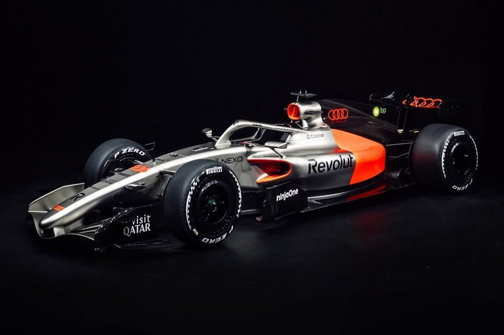
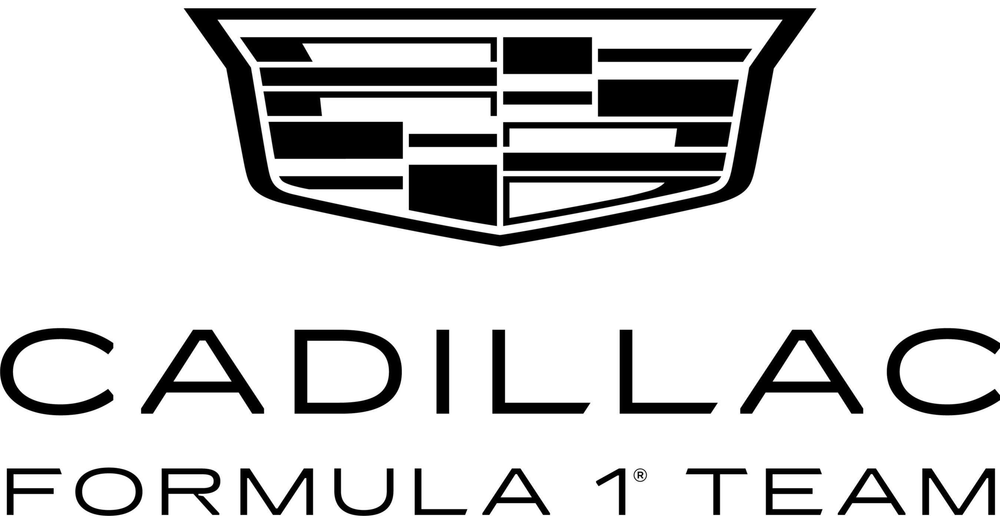
Cadillac F1 Team
Točke: 1
Trenutna dirkaška zasedba:
- Sergio Perez (Mehika)
- Valtteri Bottas (Finska)
Zgodovina ekipe
Znamka Cadillac pod okriljem General Motorsa predstavlja popolnoma nov in težko pričakovan obraz v garažah Formule 1. Za svojo krstno sezono 2026 so izbrali izjemno izkušeno veteransko linijo Bottas-Perez, ki ekipi zagotavlja takojšnjo stabilnost in razvoj.
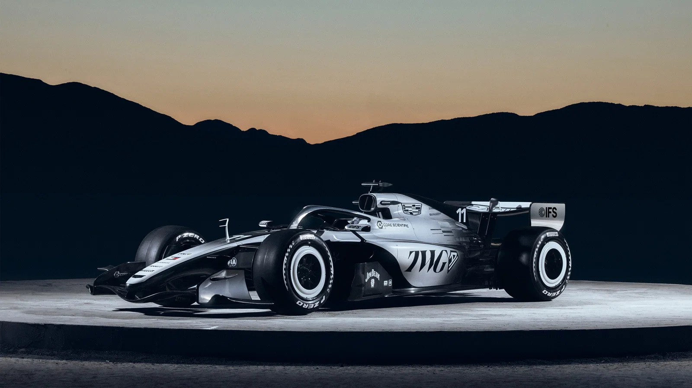
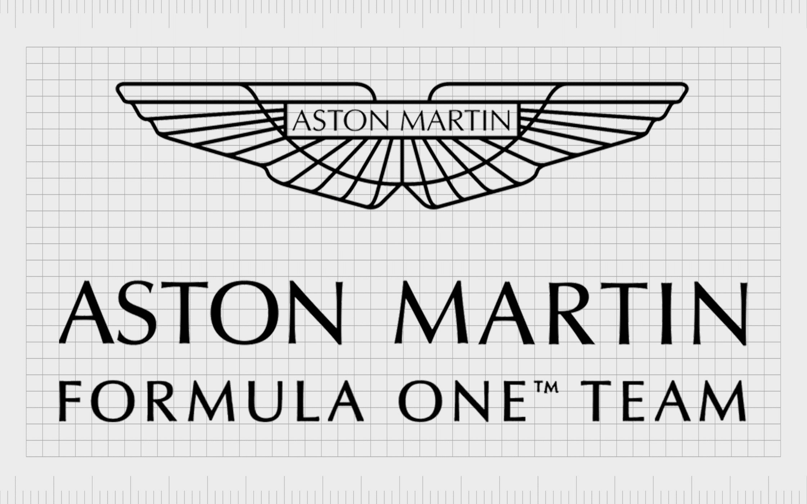
Aston Martin Aramco
Točke: 0
Trenutna dirkaška zasedba:
- Fernando Alonso (Španija)
- Lance Stroll (Kanada)
Zgodovina ekipe
Ekipa pod vodstvom Lawrenca Strolla deluje iz vrhunskega tehnološkega kampusa v Silverstonu. Kljub kultni britanski dirkaški zeleni barvi in prisotnosti legendarnega Alonsa, se moštvo na začetku nove regulativne ere leta 2026 sooča s precejšnjimi izzivi in smolo.
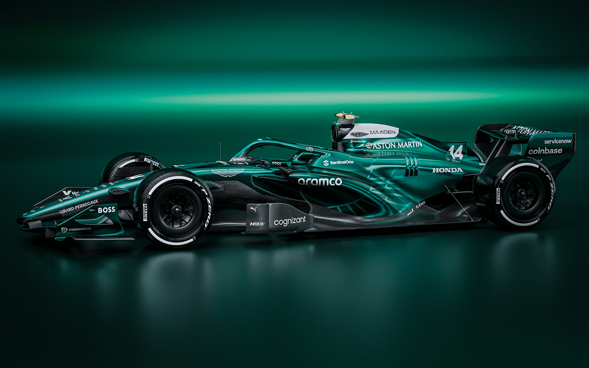